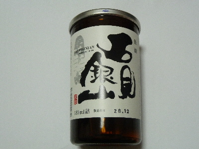
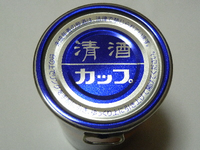
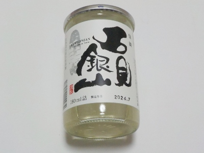

一宮酒造の清酒「石見銀山」
更新日 : 2026/10/11
大田のイオンで買いました。出雲のイオンモールでも販売してました。イオンって色々買えて便利ですね。

一宮酒造さんの「石見銀山」って名前のお酒は色々種類があるようですが、これは一番安かった商品です。
清酒 佳撰 石見銀山です。

このタイプのワンカップの蓋って、開けるときのお酒がこぼれそうでドキドキします。今回は綺麗いに開けれました。
飲んだ感想ですが、口当たりやのど越しがマイルドで飲みやすかったです。軽いんですが甘さがあるので、味わいがあって美味しかったです。
2017/01/04 次回は違う種類の「石見銀山」を飲んでみたいって思いました。

2026/10/11 瓶の色が変わりましたね。税込み217円でした。飲みやすい地酒って感じがしました。